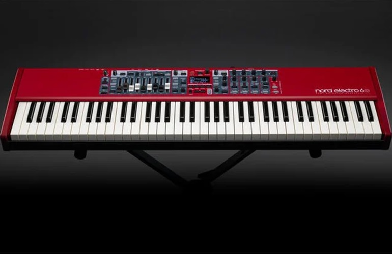
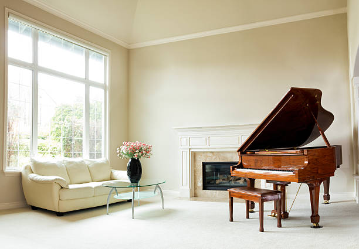
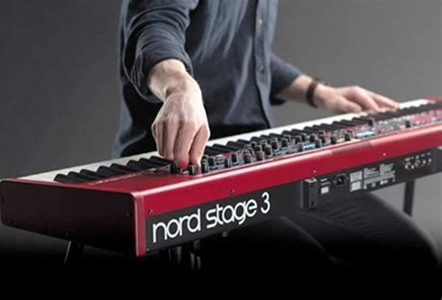

*Cours sur le piano*
Contenu du Cours

Introduction
Celui qui cesse d'apprendre s'éteint,car nul n'a le monopole de la connaissance.Chaque jour la vie nous reserve des surprises et des innovations naissent du jour au lendemain;
le moyen le plus simple de s'en sortir est d'apprendre sans afin d'être toujours à l'actualité des avancées musicales.
Dans cette partie du didactitiel nous allons essayer d'aider l'apprenti(e) avec des méthodes et principes de base qu'il faut ,c'est à dire les prérequis nécessaires pour l'anmener
à acquérir les techniques d'accompagnement pour lui permettre d'exécuter un morceau sans avoir une partition (qui est une transcription écrite et caractéristique du son musical
permettant aux interprètes de la reproduire au moyen des instruments ou des voix...).
Les techniques et méthodes classées dans cette section aident celui-ci à interpréter facilement juste en auditionnsnt un morceau musical.
Cela ne veut pas dire néccessairement que nous négligeons des méthodes classiques qui est une musique écrite permettant de lire toute sorte des musiques à des différents styles
(classiques,jazz,roc,salsa...) mais lui donne une idée générale de son instrument et la grande partie de sa musique.
Notions préliminaires
1.Definition de la musique
La musique est l'art de combiner le son(d'une manièe agréable) ,elle a pour objet d'abord de charmer l'oreille ,puis d'intéresser l'esprit.
Le son : est une vibration d'un fluide (qui passe qui traverse ),qui se propage sous forme d'onde (ride ,mouvementée) sur l'ouie.
N.B:Le son reste l'élément essentiel de la musique .Mais le son se distingue du bruit car le bruit :émet des vibrations confuses et irrégulières(d'une manière désordonnée),notons que
tout son est susceptible d'être utilisé en musique ,cependant il n'y a véritablement musique que si les son sont ordonnées entre eux de manière à exprimer une pensée d'ordre musical.
- Qualité d'un son musical
Nous avons principalement 4 qualités:la Hauteur ,la durée,l'intentisité,Le timbre.
- La hauteur:elle est l'élément qui fait distinguer un son grave d'un son aigu.
- La durée:c'est la Qualité d'un son ténu plus ou moins longtemps.
- L'intensité:elle dépend de l'amplitude des vibrations qui fait qu'un son produit soit fort ou faible.
- Le timbre:c'est cette qualité particulière qui aide à reconnaitre une voix ou un instrument différent d'un autre bien que produisant un même son.
En parlant de la musique : quelque soit leur genre ,leur style ,ou leur différence ,la musique reste depuis le temps exécutéen 2 sortes
Il y a la musique produite par la voix qu'on appelle vocale et celle qui est produite par un instrument qui est appélée instumentale.La combinaison de tout les deux donne :la musique mixte.
Ce qu'il faut retenir c'est que la musique vocale non accompagnée et d'instruments musical est appelé A capella
Des nombreux genres musicaux appartiennent proprement à la musique instumentale par exemple,dans la musique classique comme:
- La sonate:composition musicale exécutée par un ou plusieurs instruments en italien "Samare".
- Le concerto:composition musicale pour un ou plusieurs instruments :soliste et orchestre.
- La symphonie:composition musicale par orchestre constituée de 4 contrastées ou mouvement ,vient du terme grec Sun(ensemble avec phone qui veut dire son.)
Il arrive très souvent que des instruments soient sollicités dans des pièces de musique vocale telle que l'operaqui est un genre de chanson comédie .
La musique comprend trois grandes parties à savoir:
- La mélodie :qui étudie les gammes c.à.d des notes à jouer l'une apres l'autre.
- L'harmonie :qui étudie les accords ou encore les notes misent ensemble.
- Le rythme :étudie la mésure voir même la notion de temps.
N.BLa mélodie et l'harmonie nous montre quoi jouer et rythmenous montre comment jouer.
Juste nous donner l'idée de ce qui fera l'objet des détails durant ce cours.
Etude du piano
Le piano est un instument de musique polyphonique (combinaison de plusieurs mélodies)à clavier de la famille d'instrument a cordes frappées,qui veut dire que c'est instrument dont les cordes sont frappées manuellement ou mécaniquement
à mains nu ou à l'aide d'un marteaux,mailloche ou baguette.

*Différence entre un piano et un synthétiseur
Le piano est mécanique ,il est appelé instrument à corde frappée tandis que le synthétiseur est un instrument électrique à plusieurs fonctions sons contrairement au piano qui n'a qu'un seul son qui est le piano.Mais les deux comportent un même clavier.

Le clavier
Il est composé des touches noires (altérations) et des touches blanches (naturelles).Sur le clavier on a un groupe de deux touches suivi d'un groupe de trois touches noires.La note Do ou C est la touche blanche qui se place devant le groupe des deux touches et Fa ou F
est celle qui se place devant le groupe de trois touches noires.
Position des mains
La main dans le prolongement horizontal du bras,joue sur le bout des doigts ,les mains doivent avoir une forme arrondie ,comme si on tenait une pomme en main ,la pousse ne doit pas sortir du clavier ,avoir toujours les ongles courts.

Le doigté
Ensemble de principes et gestuelles pour avoir une bonne position des doigts sur le clavier.Les doigts sont numérotés de 1 à 5.
1Pousse,2Index,3Majeur,4Annulaire et 5Auriculaire.
Quelques exercices pour créer l'indépendance des doigts et une étude des notes sur le clavier
Voici quelques exercices pour travailer la souplesse des doigts sur un cllavier :
Exercice 1:
Doigté main gauche :5 4 3 2 1 .
Doigté main droite :1 2 3 4 5 .
Sonoriquement cela donnera :DO-RE-MI-FA-SOL.Faire cela avec chacune des mains pendant au moins 45 min à une heure puis refaire l'exercice pendant encore le même temps avec les deux mains por une maitrise totale de l'exercice.
Refaire encore le même exercice mais cette fois ci en appuyant un doigt àpres l'autre tout en gardant une bonne position des mains sur le clavier,les doigts doivent être plaqué sur le clavier et dès que l'un est joué ,il reprend sa place habituelle et cela allant de gauche à droite et vice-versa.
Exercice 2:
Doigté main gauche :5 3 4 2 3 1 4 2 .
Doigté main droite: 1 2 3 4 3 5 2 4 .
Sonoriquement nous aurons DO-MI-RE-FA-SOL-RE-FA et en partant du même principe que l'exercice précedant.
À propos des touches noires précédentes (altérations) ,elles sont appelées soit bémol(b) soit dièse (#).
Il faut noter que b ou le bémole d'une note ,c'est baissé le son d'un démi ton ou plus et le # ou diese est la hausse sonore d'un ton ou plus.A partir de Do ,si on monte la touche noire devant lui ,ça sera appelée Do# parce que le DO est haussé et cela est valable pour toute les autres. Deux notes sont enharmoniques lorsque leur nom est différent mais qu'elles produisent un même son.L'enharmonie , en effet ,désigne la synonymie qui existe entre deux notes de noms différents ,mais affectées toutes deux au même son.
N.B:ce qu'il faut savoir c'est que dans un clavier on a une suction ou une série de touche qui se suive regroupé en octave ,c.à.d de DO à SI,que l'on aura:DO ,RE,FA ,SOL et LA peuvent être diésé et RE,MI,SOL,LA,SI peuvent être par conséquant bémolié.Donc une touche peux avoir deux appelations soit il est la bémole d'une note soit son dièse.
Etude sur les gammes et les arpèges
La Gamme
Une succession conjointe de de 8 notes dont la dernière est la répetition de la première
Une note est un est symble permettant de présenter la hauteur tout cour d'un son.
Ex:La clé de sol
.png)
Pour les gammes nous pouvons en distinguer 2 qui sont:La gamme chromatique et la gamme diatonique de la provienne les multiples gammes que nous verrons à la suite du temps.
1.Gamme chromatique
Est celle dont l'échelle musical composée de 12 degrés ,séparé les uns les autres par un demi-ton.
- Le demi-ton:c'est le plus petit des intervalles conjoints de l'échelle diatonique.
- Le ton: est le plus grands des intervalles conjointes de l'échelle diatonique.
Le ton peut être divisé en deux demi-tonou en 9 commas : qui est l'intervalle très petit.Il est à noterque l'intervalle d'un ton sur le clavier ,est l'intervalle de deux notes séparées d'une note au milieu au contraire un demi-ton est l'intervalle non séparée d'une note au milieu.Cela veut dire qu'un demi-ton a 4 commmas qui sépare 2 notes d'un nom différent .
Ex:Do#-Re ou Do-Reb et demi-ton chromatique a 5 commas : qui sépare 2 notes d'un même nom dont l'autre est altéré .Ex:Do-Do# - Mi-Mib
2.Gamme diatonique
Est celle qui est composée de 8 degrés répartis de 5 tons et 2 demi-tons c.à.d du 1er degré au 2ème: un ton, du 2ème au 3ème: un ton, du 3ème au 4 ème: demi-ton, du 4ème au 5ème: un ton, du 5ème au 6ème: un ton, du 6ème au 7ème: un ton, du 7ème au 8ème: demi-ton.
Au total on a :5tons et 2 demi-tons.
-
N.B:les degrés sont représentés par des chiffres romains tels que:
- pour le 1er degré
- pour le 2nd degré
- pour le 3ème degré
- pour le 4ème degré
- pour le 5ème degré
- pour le 6èmedegré
- pour le 7èmedegré
- pour le 8èmedegré
- Tandis que les notes sont représentées par les 7 premières lettresde l'alphabet français:
A pour La, B pour Si, C pour Do, D pour Re, E pour Mi, F pour Fa, G pour sol.Donc sur le plan international on compte et on présente C,D,E,F,G,A,B.
Nomination de degrés
Chaque degré à un nom :
- Le 1er degré: la note fondamentale au 1er degré s'appelle Tonique;elle donne la tonalité (ensemble de plusieurs accords qui accompagnent une harmonie,un morceau musical)
et elle est considérée comme point du départ d'une gamme .De ce fait une tonalité peut être définie comme une gamme de 7 notes désignées par sa tonique.En bref une tonalité détermine même la qualité du morceau
musicale.Ex: une musique qui se joue au lieu de parler de quelle gamme elle se joue ,on parlera plutôt de la tonalité dans laquelle elle est jouée.
- Le 2nd degré: est appelé Sus tonique parce qu'il est placé au-dessus de la tonique.
- Le 3ème degré: est appelé médiante, parce qu'il est placé ente la tonique et la dominante c.à.d médiateur ou milieu.
- Le 4ème degré: est la sous-dominante parce qu'il est placé en dessous de la dominante.
- Le 5ème degré: est la dominante ,parce qu'il est le centre de l'échelle tonale.
- Le 6ème degré: est appelé le sus-dominante ,parce qu'il est au-dessuscde la dominante.
- Le 7ème degré: est appelé sensible parce qu'il fait présenter la tonique qu'il précède directement dans l'ordre des degrés de la gamme.Chaque degré d'une gamme prtera une dénominaton invariable
qui lui vient de sa position par rapport à sa tonique.
- Le 8ème degré: est la répetition du premier degré.
Analysons la composition de la gamme diatonique de Do majeur.
DO-RE-MI-FA-SOL-LA-SI-DO: elle composée de 5 tons et 2 demi ton c.à.d ,de DO à RE 1 ton,de RE à MI 1 ton,de MI à FA demi ton,de FA à SOL 1 ton ,de SOL à LA 1 ton ,de LA à SI 1 ton et de SI à DO demi ton.
Comment se servir de cette composition pour trouver les notes constituantes d'une gamme majeur quelconque?
C'est simple ;ex: on veut trouver les notes contituant la gamme majeure de SOL,il faut commencer donc à calculer la composition à partir de la note SOLqui est la première note se la gamme ou le 1er degré et c'est celle qui donne son nom à la gamme.
ex:
SOL-LA-SI-DO-RE-MI-FA#-SOL,toujours en partant des principes des 5 tons et 2 demi tons.
N.B:Le but cette partie des gammes et des arpèges est d'apprendre avecune bonne concentration car elle vous aidera à :
- maitriser tout les intervalles compris dans différentes gammes ;
- maitriser les notes du clavier ;
- savoir le nombre d'altération compris dans chaque gamme ;
- bien former les accords dans des différentes gammes ;
- jouer n'importe quel morceau dans n'importe quelle tonalité.
Le doigté pour les gammes
Pour la gamme de DO majeur nous avons
M.D:1 2 3 1 2 3 4 5
M.G:5 4 3 2 1 3 2 1
ce doigté est pour une octave (intervalle de 8 notes) ,valable pour les gammes majeures tels que :DO,SOL,RE,LA,MI.
Pour 2 octaves on a comme doigtés :
M.G: 5 4 3 2 1 3 2 1 4 3 2 1 3 2 1
M.D: 1 2 3 1 2 3 4 1 2 3 1 2 3 4 5
Ici le passage du pousse intervient ,il doit passer en dessous des doigts.
Tableau de doigté à 2 octaves pour le reste des gammes:
| Si maj |
M.G |
4 |
3 |
2 |
1 |
4 |
3 |
2 |
1 |
3 |
2 |
1 |
4 |
3 |
2 |
1 |
| M.D |
1 |
2 |
3 |
1 |
2 |
3 |
4 |
1 |
2 |
3 |
1 |
4 |
3 |
4 |
5 |
| Fa# |
M.G |
4 |
3 |
2 |
1 |
3 |
2 |
1 |
4 |
3 |
2 |
1 |
3 |
2 |
1 |
2 |
| M.D |
2 |
3 |
4 |
1 |
2 |
3 |
1 |
2 |
3 |
4 |
1 |
2 |
3 |
1 |
2 |
| Do# |
M.G |
3 |
2 |
1 |
4 |
3 |
2 |
1 |
3 |
2 |
1 |
4 |
3 |
2 |
1 |
2 |
| M.D |
2 |
3 |
1 |
2 |
3 |
4 |
1 |
2 |
3 |
1 |
2 |
3 |
4 |
1 |
2 |
| Fa maj |
M.G |
5 |
4 |
3 |
2 |
1 |
3 |
2 |
1 |
4 |
3 |
2 |
1 |
3 |
2 |
1 |
| M.D |
1 |
2 |
3 |
4 |
1 |
2 |
3 |
1 |
2 |
3 |
4 |
1 |
2 |
3 |
4 |
Si b |
M.G |
3 |
2 |
1 |
4 |
3 |
2 |
1 |
3 |
2 |
1 |
4 |
3 |
2 |
1 |
2 |
| M.D |
2 |
1 |
2 |
3 |
1 |
2 |
3 |
4 |
1 |
2 |
3 |
1 |
2 |
3 |
4 |
Mi b |
M.G |
3 |
2 |
1 |
4 |
3 |
2 |
1 |
3 |
2 |
1 |
4 |
3 |
2 |
1 |
2 |
| M.D |
2 |
1 |
2 |
3 |
4 |
1 |
2 |
3 |
1 |
2 |
3 |
4 |
1 |
2 |
3 |
La b |
M.G |
3 |
2 |
1 |
4 |
3 |
2 |
1 |
3 |
2 |
1 |
4 |
3 |
2 |
1 |
2 |
| M.D |
2 |
3 |
1 |
2 |
3 |
1 |
2 |
3 |
4 |
1 |
2 |
3 |
1 |
2 |
3 |
N.B:à partir de ce deux octaves vous pouvez continuer jusqu'à 3 ou 4 octaves ou plus encore et ainsi de suite.
On peux aussi regrouper les gammes selon l'odre de dièse et l'ordre des quartes,
-
Pour les gammes selon l'ordre dièses ,cet ordre suit une échelle de quinte :
- Sol maj avec un dièses = Fa#
- Re maj avec deux dièses = Fa#,Do#
- La maj avec trois dièses = Fa#,Do#,Sol#
- Mi maj avec quatre dièses = Fa#,Do#,Sol#,Re#
- Si maj avec cinq dièses = FA#,Do#,Sol#,Re#,La#
- Fa# maj avec six dièses = Fa#, Do#, Sol#, Ré#, La#, Mi#
- Do# avec sept dièses = FA#,Do#,Sol#,Re#,La#,Mi#,Si#,
-
Pour les gammes selon l'ordre de ,cet ordre suit une échelle de quarte :
- Fa maj avec un bémol = Sib
- Sib maj avec deux bémols = Sib,Mib
- Mi avec trois bémols= Sib,Mib,Lab
- Lab maj avec quatre bémols= Sib,Mib,Lab,Reb
- Reb maj avec cinq bémols=Sib,Mib,Lab,Reb,Solb
- Solb maj avec six bémols=Sib,Mib,Lab,Reb,Solb,Dob
- Dob maj avec sept bémols=Sib,Mib,Lab,Reb,Solb,Dob,fab
Etude sur les accords
Définition:est un ensemble de 3 ou plusieurs sons joués simultanément.La fondamentale dans l'accord est la note la plus gravesur laquelle on se base pour former un accord.c'est la note qui donne son nom à l'accord ,par laquelle on se base pour former l'accord.
Sortes d'accords
Il y a 4 sortes d'accords :L'accord Majeur (M),Diminué(dim;0) et augmenté(Aug;+).Tous les accords sont parfois des : Triades ou accord parfait (accords de 3 sons ),Tétrades(accords de4 sons)et Accords étendus(accords de plus de 4 sons voir même 5 ou plus).
1.Majeur
Il comprend pour la 1ère partie de la fondamentale l'intervalle de deux tons puis à la seconde partie l'intervalle de 1 ton et demi-ton.
ex:pour former l'accord de Do Maj.A partir de la fondamentale Do ,on fait l'intervalle de 2 tons ,on trouve Mi ,à partir de Mi lìntervalle de 1 ton et d'un demi-ton on trouve Sol .Ainsi l'accord de Do Maj.DO-MI-SOL.
Il a comme doigté M.G:5 3 1 et M.D: 1 3 5 .
Cette formule est valable pour les accords majeurs à 3 sons(tétrades).
Exercice :Former l'accord majeur de RE,MI,FA,SOL,LA,SI,DO#.RE#.FA#SOL# et LA#.
2.Mineur
Il comprend 1 ton et un demi-ton pour la la 1ère partie puis2 ton pour la segonde partie ,c'est l'inverse de l'accord majeur.
Ex:pour former l'accord de Do mineur ,il faut a partir de la note Do faire l'intervalle d'un ton et d'un demi-ton,on aura la note Mib et à partir de celle-ci l'intervalle de2 tons ,c'est jusqu'àSOL.Ainsi l'accord Do mineur est =DO-MIB-SOL.
N.B:pour trouver facilement un accord mineur,il suffit seulement à partir de l'accord bémolisé la tierce (3ce ) ou la 3 ème note de l'accord majeur directement celui-ci devient mineur.
Ex:Do maj=DO-MI-SOL
DO min= DO-MIb-SOL.
3.Diminué
Il comprend 1 ton et un demi-ton pour la 1ère partie et un demi-tonpour la 2 ème partie.
Ex:DO dim=DO-MIb-SOLb.
N.B:Un accord est diminué lorsqu'à son état majeur la 3ce et la 5te sont bémolisés.
4.Augmenté
Il comprend 2tons pour la 1ère et la 2ème partie.
Ex:Do aug=DO-MI-SOL#.
N.B:Un accord est augmenté lorsqu'à son état majeur la 5te est augmenté ou dièse.
Le reversement des accords
Ils nous aide à unifier le son .Il y a en principe 2 renversements pour les accords de 3 sons.A l'état fondamental par exemple DO maj= DO-MI-SOL :parce que l'accord commence a partir de la note DO qui donne son nom à l'accord,Do est la fondamentale ou la note fondamentale de cet accord.
Doigté :M.G:5 3 1
M.D:1 3 5.
Le 1er renversement
La tierce devient la note de base ,la fondamentale va à la dernière position et on aura:MI-SOL-DO.Le doigté reste toujours le même 5 3 1 pour la M.G et 1 2 5 pour la M.D.
Le 2ème renversement
La quinte devient la note de base ,la fondamentale et la tierce viennent après et on aura: SOL-DO-MI.Le doigté reste toujours le même 5 3 1 pour la M.G et 1 2 5 pour la M.D.
Ce princpe est pour tous les triades (majeur,mineur ,diminué,augmenté).
N.B:Les tétrades n'ont qu'un seul doigté :1 2 3 5.
Et ils ont 3 renversements : Ex:Do maj7=DO -MI-SOL-SI .
Le 1er renversement: MI-SOL-SI-DO
Le 2ème renversement: SOL-SI-DO-MI
Le 3ème:SI-DO-MI-SOL
L'arpège
C'est une exécution alternative des notes d'un accord.
Ex: l'arpège de Do maj est DO-MI-SOL-DO
1.Doigté:M.G: 5 4 2 1 et M.D: 1 2 3 5 pour un octave.
Pour 2 octaves M.G: 5 4 2 1 4 2 1 et 1 2 3 4 5 pour la M.D.
Ce doigté est valable pour la gamme de : Do maj,Fa maj,Sol maj et Fa# maj.
2.Doigté: M.G :5 3 2 1 et M.D :1 2 3 5 pour un octave .
Pour 2 octaves:M.G : 5 3 2 1 3 2 1 et M.D : 1 2 3 1 2 3 5 .
Ce doigté est valable pour la gamme de :RE maj,MI maj,LA maj et SI maj.
3.Doigté:M.G: 2 1 4 2 et M.D: 2 1 2 4 pour une octave
Pour 2 octaves :M.G: 2 1 4 2 1 4 2 et M.D: 2 1 2 4 1 2 4 pour 2 octaves.
Ce doigté est valable pour :DO#,RE#,SOL#,LA#.
Cas de tétrades : M.G: 5 4 3 2 1 et M.D: 1 2 3 4 5 pour un octave de DO ,SI et FA# .
Et pour 2 octaves on a :M.G: 5 4 3 2 1 4 3 2 1 M.D: 1 2 4 1 2 3 4 5 .
Pour DO#,RE#,SOL# ET LA#.
L'harmonisation de la gamme majeure
Elle consiste à donner un accord sur chaque degré de la gamme .Dans la nomenclature de l'harmonisation de la gamme majeure par rapport au :
- 1er degré
- 2ème degré
- 3ème degré
- 4ème degré
- 5ème degré
- 6ème degré
- 7ème degré
Triades:
- Maj
- Min
- Min
- Maj
- Maj
- Min
- Dim
Tétrades:
- Maj7
- Min7
- Min7
- Maj7
- Maj7
- Min7
- Dim<7/li>
Les enchainements
Après avoir appris les gammes ,les arpèges ,les accords et les renversements ou renversés; On peut maintenant faire quelques enchainements avec les accords appris.Ici on utilise 1 ,2 ,3 ,4 ,5 ,6 ,7 pour désigner les accords dans une gamme quelconque.
Ex:Dans la gamme de Do maj on a 1 comme accord de Do Maj ,2 comme l'accord l'accord de RE min ...
Il y a l'enchenement de :
- 1 4 1 5
- 1 4 5 4
- 1 5 4 5
- 1 1 1 5
- 1 4 5 6 2 5
Comment jouer : à la main droite on appuie 2 fois l'accord , à la main gauche lorsque l'acord est appuyé au même moment la main gauche appuie le 1er ,8ème ,5ème et 8ème degrés (l'un après l'autre) de la gamme correspondante a l'accord appuié.
Les techniques d'accompagnement
- Lorsque l'enchainement est dans une tonalité quelconque par exemple en Do majeur on utilise l'accord de Do(1er degré) en état fondamental directement son 2ème degré reste en état fondamental,le 3ème degré est joué au 2ème renversement ,le 4ème degré le 2ème renversement,le 5ème le 1er renversement, le 6ème le 1er renversement et le 7ème en état fondamental
- Lorsqu'on utilise le 1errenversement de Do(1er degré) maj on aura pour le 2 ème le 1er renversement , le 3ème degré en état fondamental ,le 4ème degré en état fondamental , le 5ème le 2ème renversement , le 6ème état fondamental et le 7ème degré le 2èmerenversement.
- Lorsqu'on utilise le 2ème renversement de Do maj (1 er degré) on aura pour le 2ème degré le 2ème renversement, le 3ème degré le 1er renversement , le 4ème degré le 1er renversement ,le 5ème degré état fondamental, le 6ème état fondamental et le 7ème degré 2ème renversement.
N.B:à retenir le 1 er, 2ème et 7 ème degré;3ème degré et 4èmedegré ,le 5ème et 6èmedegré vont de paire.
Accompagnement par intervalle
Ici on verra comment accompagnerun chanson ,tout ,en respectant son style ,sa structure et son rythme.Il faudra alors se familiariser aux styles précédent ,surtout quitter pour la main droite l'étape d'appuyer les accords seulement mais de les jouer maintenant.
il faut aussi apprendre les intervalles : (l'intervalle dans la musique : est l'écart de hauteur) son musical qui détermine la mélodie et l'harmonie .Les intervalles nous aide à créé des mélodies sur base d'accords ou harmonisé une mélodi entre 2 notes .
Le nom de l'intervalle est fonction de sa longueur au 1er degré(parfois appelée "chiffre" de 1 à 8.)
Les noms des intervalles sont :
- Prime
- Seconde
- Tièrce
- Quarte
- Quinte
- Sixte
- Septième
- Octave
Au-delà de l'octave le nom de l'intervalle est l'adjectif numéral ordinal correspondant : neuvième,dixième ,onzième etc. Ex:Do de la 1ère octave donne le 9ème
Do de la 1 ère octave -Mi de la 2 ème octave donne le 10 ème, Le Do de la 1 ère octave - Fa de la 2 ème octave donne le 11 ème etc
Autres accords de majeur 7(Maj7)
1.Le doigté pour les gammes
Le majeur 7 s'obtient en descendant d'un demi-ton à partir de la tonique .
Ex:Do maj7: DO-MI-SOL-SI.
2.Accord 7
Le 7 s'obtient en descendant d'un ton à partir de la tonique .
Ex:Do maj7: DO-MI-SOL-SIb.
3.Accord de 6
Avec l'ajout du 6 ème degré dans la composition de l'accord parfait.
Ex: Do: DO-MI-SOL-LA.
4.Accord d'add 9 ou ajouté
Avec l'ajout du 2 ème ou 9ème degré.
Ex: Do: DO-RE-MI-SOL
5.Accord de 9
Avec l'ajout du 7ème et 2 ème degré (7+2). Ex :DO9=D0-RE-MI-SOL-SIb
Ex: Do: DO-MI-SOL-LA.
6.Accord de 11ème
Avec l'ajout du 7ème,2ème et 4ème degré(7+4).
Ex: Do11: DO-RE-MI-SOL-SIb-FA.
7.Accord de 13ème
Avec l'ajout du 7ème,2ème ,4ème et 6ème degré(7+6).
Ex: Do13: DO-RE-MI-SOL-SIb-LA.
8.Accord de majeur 9ème ,11 ème et 13ème
Ces accords gardent les mêmes notes avec les 9 ,11 ,13 sauf ici le 7 est remplacé par le majeur .Ex :DO maj9 =DO-RE-MI-SOL-SI,DO maj11 =DO-RE-MI-SOL-SI-FA
9.Accord de suspendu 4(sus 4)
Avec l'ajout de 4ème degré et l'absence du 3èmequi se résous après.Ex: DO sus 4= DO-FA-SOL
10.Accord de mineur majeur 7
Avec l'ajout de majeur 7 dans la compositon d'un accord mineur.Ex: DO mMaj7 = DO-MIb-SOL-SI,LA mMaj7 = LA-DO-MI-SOL#.
Bémol 7 = double bémol, on diminue d'accord et on ajoute le 6ème degré.Do dim 7=DO,MIb ,SOLb,LA
11.Accord d min 7 b5 mineur 7(quinte bémol) ou demi-diminué
Ex:DO-MIb-SOLb-SIb
11.Accord de dim: où le 7 eest doublement bémolisé(6)
Ex: DO-MIb-SOLb-LA(SIbb)